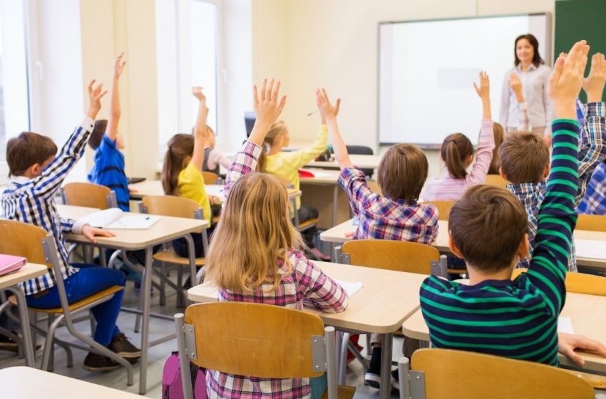

"el ambito escolar un buen lugar para progresar"
"el ambito escolar un buen lugar para progresar"
Cuando se habla de este término se hace referencia al contexto en el cual se desarrolla lo que es el proceso educativo y tiene como finalidad facilitar lo que es el intercambio de información en diferentes áreas y cubrir las necesidades que se presentan en estas. En lo que respecta a lo qué es el ámbito educativo existen diferentes formas de ponerse en marcha para desarrollar las actividades de acuerdo al área de aprendizaje, tanto los docentes como los padres deben involucrarse de forma activa para garantizar el desarrollo óptimo. Gracias a los cambios y avances que se han sufrido con el paso del tiempo, la implementación de nuevas tecnologías en esta área hace posible que se amplíe la educación más allá del aula de clases. Continúa leyendo hasta el final y aprende más al respecto.
A la hora de abordar cualquier disciplina existen conceptos que son claves para desarrollar de manera efectiva el aprendizaje, por ello para comprender mejor lo que es el ámbito educativo resulta necesario esclarecer algunos términos correspondientes a él y que aplican los docentes y los alumnos en día a día tales como:
Este concepto atañe tanto al docente como al alumno. El sistema educativo se rige por una serie de competencias que deben cumplir los docentes para garantizar que todos los alumnos adquieran los mismos conocimientos. Además la educación se orienta a que el alumno sortee una serie de obstáculos y demostrar que tiene los conocimientos requeridos y así avanzar de nivel, para ello la comunicación con el docente es vital, pues así este conoce las dudas que se tienen.
Dentro de las competencias que deben sortear los alumnos podemos encontrar están:
Mientras que competencias con las que debe contar el docente son:
Este concepto compete al docente. Cuando se habla de lo que es el ámbito educativo, este se encuentra conformado por una serie de estrategias de enseñanza que permiten desarrollar el máximo potencial de los estudiantes dentro y fuera de las escuelas, las estrategias consisten en diversas de acciones y métodos educativos por parte del docente, que contribuyen al procesamiento de la información en los alumnos.
Dentro de las estrategias de enseñanza podemos encontrar:
Este concepto compete tanto al docente como al alumno. Al abordar este punto en la educación es necesario destacar que contar con una variedad de pensamientos hace posible que se dé el intercambio de información y cada uno comprenda el punto de vista del otro. De acuerdo a la investigación en el área de la neuropsicología exponer a los niños a este tipo de intercambios contribuye con el proceso de aprendizaje.
La observación le permite al docente identificar en qué puntos los alumnos presentan mayor dificultad, bien sea porque tardan más llevando a cabo una actividad o simplemente porque no la culminan en el aula, cuando se emplean las nuevas tecnologías TICs (Tecnologías de la información y la comunicación) el proceso se vuelve un poco más complejo por ello se recomienda que se empleen videollamadas durante las tareas, para observar el desenvolvimiento de los pequeños y ajustarse mejor a sus necesidades educativas.
Estos conceptos aplicados al ámbito educativo permiten que los docentes y los estudiantes puedan establecer una relación donde el aprendizaje pueda fluir de forma óptima, pero debe existir interés de ambas partes, para aquellos que quieran mejorar sus conocimientos sobre el área de la docencia es de suma importancia realizar algunos cursos de formación.

fuente: https://www.euroinnova.edu.es/blog/que-es-el-ambito-educativo